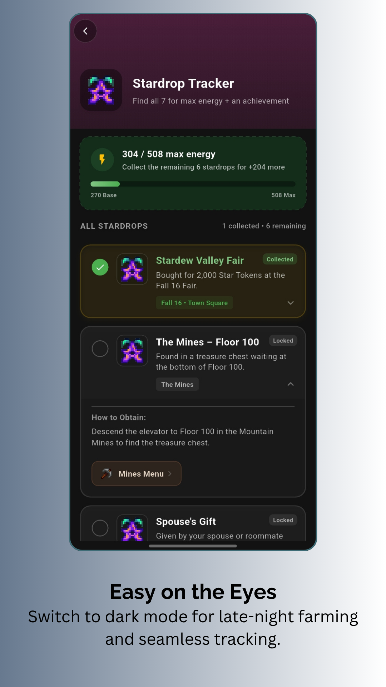

Master Your Farm & Achieve
100% True Perfection
Track villagers, community center bundles, crops, fish, golden walnuts, and 1.6 content. Everything you need to achieve 100% Perfection in Stardew Valley—100% offline.

Core & Perfection Features
Everything You Need For
100% True Perfection
Designed with simplicity and completeness in mind. Access detailed guides, track endgame achievements, and plan your farm without interrupting your gameplay.
True Perfection Tracker (100% Completion)
Monitor your journey toward 100% Perfection in real-time! Includes dedicated trackers for all 11 official requirements:
Automatic Crop Profit Planner
Maximize your earnings effortlessly! Set your planting dates and automatically calculate estimated seasonal profits, harvest schedules, and seed costs.
Calendar & Custom Planner
Seasonal 28-day grid with villager birthdays, festivals, Queen of Sauce TV broadcast guide, and custom personal to-do reminders for your farm tasks.
Wardrobe & Mannequin Studio
Dress up live 2D mannequins! Mix & match 100+ outfits, explore curated aesthetic themes (Wizard, Gothic, Chic), plus full sewing machine & dye pot recipes.
130 Golden Walnuts Tracker
Zone-by-zone checklist for all Ginger Island Walnuts with sticky navigation headers, puzzle requirements, and real-time perfection progress sync.
Community Center Bundles
Conquer every bundle room-by-room. Visual checklists with seasonal timings and item locations, with full support for both Classic & 1.6 Remixed Bundles.
Villager Gifts & Schedules
Befriend all 34 Pelican Town residents. Complete loved gift guides, 4-season daily movement routines, dating/marriage status, and heart progress steppers.
1.6 Mastery & Secret Notes
Unlock endgame secrets! Full guides for 1.6 Mastery Caves, 19 Power Books with permanent perks, combat trinkets, and 27 Secret Notes with visual solutions.
Sneak Peek
See The App
In Action
A beautifully crafted, intuitive interface optimized for reading and quick searches on mobile devices.



What's New in Version 2.3.0
-
👗
Wardrobe & Mannequin Studio: Mix, match, and preview outfits with curated fashion themes, full clothing catalog, and instant set customization.
-
📺
TV Channels & Daily Luck Guide: Comprehensive daily broadcast schedule featuring Welwick's Oracle fortune matrix, Queen of Sauce, and Weather Forecast.
-
☁️
Google Drive Cloud Backup & Sync: Securely backup and restore farm progress checklists to Google Drive across devices with one tap.
-
🔮
1.6 Trinkets & Combat Mastery: Complete guide & stats for Magic Quiver, Fairy Box, Basilisk Paw, Frog Egg, and reforging capabilities.
-
📚
Skill Books & Bookseller Guide: Track all 1.6 Skill Books from the Bookseller with EXP multipliers, permanent perks, costs, and visit schedules.
-
🍳
Queen of Sauce in Calendar: Full 2-year cooking recipe broadcast schedule and re-runs mapped directly into your interactive Farm Calendar.
-
🔍
Advanced Search & Price Slider: Enhanced search tab featuring a Gold price range slider, category filtering, and instant image caching.
-
📅
Calendar & Planner UI Refinements: Category filter chips for Birthdays, Festivals, and Recipes with refined responsive crop planner layouts.
For Farmers, By a Farmer
As a huge fan of Stardew Valley, I created the perfect companion I always wished I had. Fast, simple, and packed with critical information to help you achieve 100% Perfection and build the farm of your dreams.
 Get Started For Free
Get Started For Free